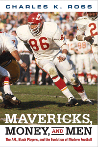

Examining the black player experience in the American Football League


Examining the black player experience in the American Football League


|  |
Mavericks, Money, and MenThe AFL, Black Players, and the Evolution of Modern FootballCharles K. Rosspaper: $19.95, Apr 16EAN: 978-1-4399-1307-9 Available cloth: $84.50, Apr 16 e-book: $19.95, Apr 16 |
212 pp
6 x 9
8 halftones
"Although other writers have explored the history of the American Football League, Mavericks, Money, and Men is the most extensive treatment of the league to date. Linking the history of the AFL with a number of key developments in American society and culture, Ross skillfully synthesizes an array of personal memoirs with a wide range of compelling anecdotes. Archival materials also illuminate the internal workings of the AFL. Mavericks, Money, and Men is a valuable narrative history that captures key moments in the development of the nation's most popular sport."
—Gregory Kaliss, author of Men's College Athletics and the Politics of Racial Equality
The American Football League, established in 1960, was innovative both in its commitment to finding talented, overlooked players—particularly those who played for historically black colleges and universities—and in the decision by team owners to share television revenues.
In Mavericks, Money and Men, football historian Charles Ross chronicles the AFL's key events, including Buck Buchanan becoming the first overall draft pick in 1963, and the 1965 boycott led by black players who refused to play in the AFL-All Star game after experiencing blatant racism. He also recounts how the success of the AFL forced a merger with the NFL in 1969, which arguably facilitated the evolution of modern professional football.
Ross shows how the league, originally created as a challenge to the dominance of the NFL, pressured for and ultimately accelerated the racial integration of pro football and also allowed the sport to adapt to how African Americans were themselves changing the game.
Read Chapter 1 (pdf).
"[T]he emergence of the American Football League (AFL) created an excitement unmatched in professional sports.... Ross focuses on the league's recruitment of black players from historically black colleges and universities (HBCUs) such as Grambling State, Florida A&M, and North Carolina Central.... [Ross] aptly documents the evolution of the current NFL and how the integration of professional football paralleled the social integration of American life. VERDICT An important chapter in U.S. racial history of the 1960s. Recommended for all collections."
—Library Journal
"Ross clearly frames how the AFL contributed to the transformation of professional football from a mid-tier sport to the dominant position it currently holds in the American sport marketplace.... Mavericks, Money, and Men is strongest in its narratives of black players who struggled to enter the hostile world of white professional football.... Ross also provides interesting, and overlooked, insights into the AFL's relationship with the media."
—Sport in American History
"Ross's historical narrative uniquely describes captivating moments, offers an important account of 1960s racial history, and provides a significant amount of information pertaining to the integration of African Americans in professional football and in broader American culture and society. This work is recommended for undergraduate students, graduate students, historians, social scientists, and general readers interested in race and sports history."
—M.E. Beagle, CHOICE
Introduction
1. A New League with New Opportunities
2. “We Don't Tote No Coloreds”
3. “We Will Kick to the Clock”
4. Boycott in New Orleans
5. From Merger to Super Bowl
6. The New NFL
7. Marlin Briscoe and the Dawn of Black Quarterbacks
8. The Birth of Modern Pro Football
Epilogue: The State of the Game II
Notes
Bibliography
Index
Charles K. Ross is the Chair of the African American Studies Program and Associate Professor of African American Studies and History at the University of Mississippi. He is the author of Outside the Lines: African Americans and the Integration of the National Football League and the editor of Race and Sport: The Struggle for Equality On and Off the Field.
Sporting, edited by Amy Bass.
As an international cultural activity for athleticism, spectatorship, and global cultural exchange, sport is unmatched by any other force on earth. And yet it remains a consistently understudied dimension of history and cultural studies. Sporting, edited by Amy Bass, aims to contribute to the study of sport by publishing works by people across a range of disciplines, by professional sportswriters, and by athletes to add substance to our still emerging notion of globalization.